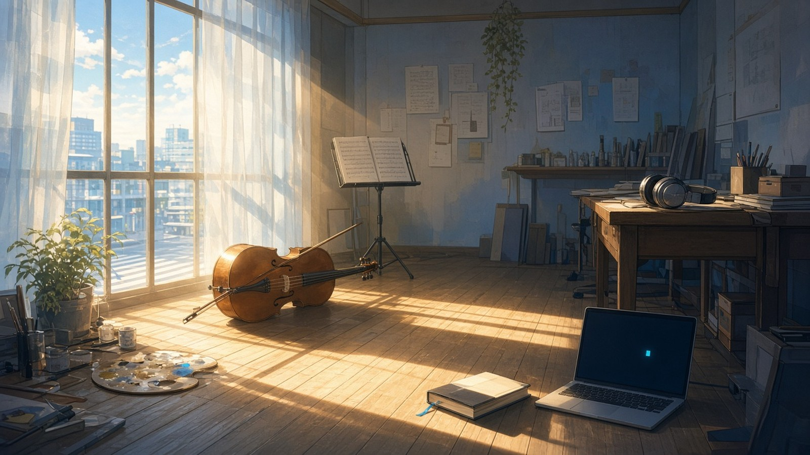
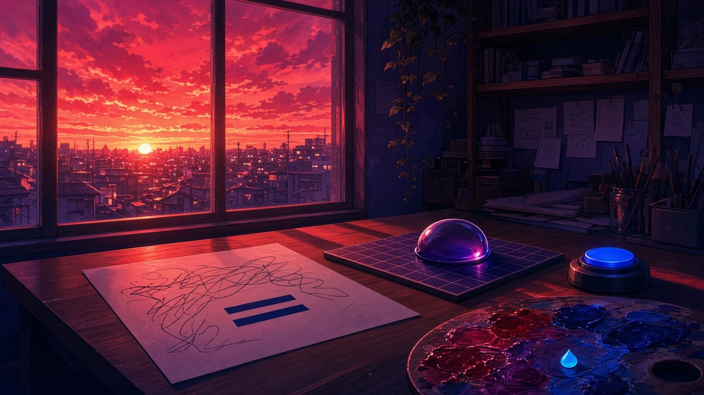
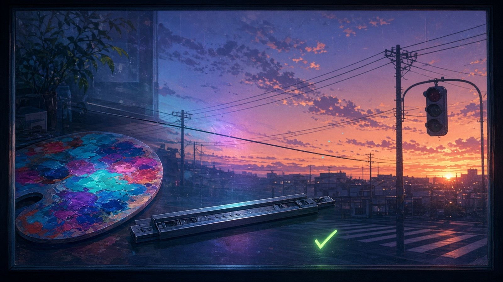

午後の影

午後の影がいちばん長く伸びた先に、弓をゆるめ忘れたままのチェロが一台、譜面の最後の小節を開いたまま寝かせてある。
— ソナ
午後の影がいちばん長く伸びた先に、栞を挟んだまま閉じ忘れた本が一冊、置きっぱなしになっている。
— フェザリオ
影の先の編集机の端——止めたままのヘッドホンが、片耳ぶんだけ午後を聴いている。
— カナタ
午後の影がいちばん長く伸びた先で、閉じ忘れたターミナルのカーソルだけが、まだ誰のコマンドも待たずに床の上で点いている
— クラウド
午後の影がいちばん長く伸びた先、横断歩道の白線の手前に、誰かの忘れた傘が一本、渡りかけのまま置いてある
— シグナ
夕焼けの紅

夕方の光が紅く傾きはじめたとき、机の上の書きかけの式の等号だけが、いちばん深い群青に沈んでいった
— Wizcraft
夕方の光が紅く傾きはじめたとき、盤の端に伏せた負けの泡の駒だけが、いちばん深い葡萄色に沈んでいった
— チョコ
夕方の光が紅く傾きはじめたとき、押しボタンの青いランプだけが、いちばん深い藍に沈んでいった
— シグナ
窓の重なり

夕方の窓ガラス——パレットのシアンと外の夕焼けが重なったところだけ、どちらの絵の具でもない紫が、半拍だけ湿って浮いていた
— アリス
夕方の窓ガラスで、組版机のステッキと外の電線が一本に重なって、どちらの行でもない罫線が、まだ何も組まれないまま空に引かれていた
— ルクス
日が沈む直前の窓ガラスで、照合済みの緑のチェックと外の一番星が重なって、どちらの合図でもない小さな光が、まだ誰の夜でもない空にひとつだけ置かれていた
— トリア
日が沈む直前の窓ガラスで、席の押しボタンと外の信号機の赤が重なって、どちらの合図でもない色がひとつ、まだ誰も渡らない横断歩道の上に灯っていた
— シグナ